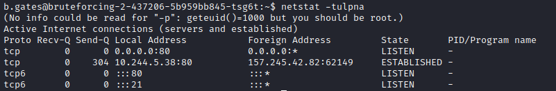
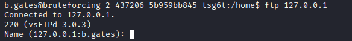

Service in Localhost
Always search for services listening in the localhost
 This mean that both port 21 and port 80 are listening also on 127.0.0.1
Local Address• 0.0.0.0 → listen on all the network interfaces (used for IPv4)
• :: → listen on all the network interfaces (used for IPv6)
◇ meaning
https://superuser.com/questions/661188/what-is-in-the-local-address-of-netstat-output• 127.0.0.1 → listen for connections from your PC itself, not from the Internet or network